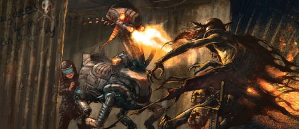

The other-dimensional home of the Dark Judges was first visited in Judge Death Lives, by which time the population of the planet have been extinguished. We got to see a time before planetary genocide in the Judge Death origin story The Boyhood of a Superfiend, as well as the Anderson tale of Half-Life. This entry compiles the much later gentle retconning provided by Kek-W and Dave Kendall in their Dreams / Fall / Visions sequences.
Art by Dave Kendall
| Dreams of Deadworld | |||||||||
| Story Title | Parts | Pages | w indicates a wraparound coverCovers | Year(s) | Issues | Writer | Artist | Colourist | Letterer |
|---|---|---|---|---|---|---|---|---|---|
From Dreams of DeadworldFire | 1 | 6 | 1946: Dave Kendall 1 | 2015 | 1946 | Kek-W | Dave Kendall | <-- | Ellie de Ville |
From Dreams of DeadworldMortis | 1 | 6 | 0 | 2015 | 1947 | Kek-W | Dave Kendall | <-- | Ellie de Ville |
From Dreams of DeadworldFear | 1 | 6 | 0 | 2015 | Reprints: SFS251948 | Kek-W | Dave Kendall | <-- | Ellie de Ville |
From Dreams of DeadworldDeath | 1 | 6 | 1949: Dave Kendall 1 | 2015 | Reprints: FCBD71949 | Kek-W | Dave Kendall | <-- | Ellie de Ville |
| The Fall of Deadworld | |||||||||
From The Fall of DeadworldTainted | 9 | 46 | 1980: Clint Langley 1 | 2016 | Reprints: http://content.2000adonline.com/FCBD2017/Tainted.pdf 1973-1981 | Kek-W | Dave Kendall | <-- | Annie Parkhouse |
From The Fall of DeadworldWinter Break | 1 | 8 | 0 | 2016 | 2011 | Kek-W | Dave Kendall | <-- | Annie Parkhouse |
From The Fall of DeadworldCursed | 11 | 56 | 2025: Clint Langley 2029: Dave Kendall 2 | 2017 | 2023-2033 | Kek-W | Dave Kendall | <-- | Annie Parkhouse |
From The Fall of DeadworldHome | 1 | 6 | 0 | 2017 | 2050 | Kek-W | Dave Kendall | <-- | Annie Parkhouse |
From The Fall of DeadworldAva | 1 | 8 | 0 | 2017 | 2061 | Kek-W | Dave Kendall | <-- | Annie Parkhouse |
From The Fall of DeadworldDamned | 12 | 60 | 2084: Michael Dowling 2087: Brendan McCarthy 2092: Clint Langley 3 | 2018 | 2081-2092 | Kek-W | Dave Kendall | <-- | Ellie de Ville |
From The Fall of DeadworldRunning Scared | 1 | 10 | 0 | 2018 | 2111 | Kek-W | Dave Kendall | <-- | Ellie de Ville |
From The Fall of DeadworldDoomed | 12 | 61 | 2152: Cliff Robinson (P) & Dylan Teague (C) 2157: Cliff Robinson (P) & Dylan Teague (C) 2 | 2019 | 2150-2161 | Kek-W | Dave Kendall | <-- | Annie Parkhouse |
From The Fall of DeadworldSidney | 1 | 10 | 0 | 2019 | 2162 | Kek-W | Dave Kendall | <-- | Annie Parkhouse |
| Visions of Deadworld | |||||||||
From Visions of DeadworldLast Man Standing | 1 | 5 | Dave Kendall 1 | 2020 | 2210 | Kek-W | Dave Kendall | <-- | Simon Bowland |
From Visions of DeadworldThe Good Samaritan | 1 | 5 | 0 | 2020 | 2211 | Kek-W | Dave Kendall | <-- | Simon Bowland |
From Visions of DeadworldA Girl's Gotta Eat | 1 | 6 | 0 | 2020 | 2212 | Kek-W | Dave Kendall | <-- | Annie Parkhouse |
From Visions of DeadworldYou Give Me Fever | 1 | 5 | 0 | 2021 | 2225 | Kek-W | Dave Kendall | <-- | Simon Bowland |
From Visions of DeadworldThe Man Who Killed Mortis | 1 | 5 | 0 | 2021 | 2226 | Kek-W | Dave Kendall | <-- | Simon Bowland |
From Visions of DeadworldLeigh | 1 | 6 | 0 | 2021 | 2227 | Kek-W | Dave Kendall | <-- | Simon Bowland |
From Visions of DeadworldTranspolar | 2 | 11 | 0 | 2021 | 2229-2230 | Kek-W | Dave Kendall | <-- | Simon Bowland |
| The Fall of Deadworld | |||||||||
From The Fall of DeadworldJessica | 1 | 10 | 0 | 2021 | 2262 | Kek-W | Dave Kendall | <-- | Jim Campbell |
| >> Features << | |||||||||
From New Books Subtitled: "It's The End of the World as We Know It".The Fall of Deadworld | 1 | 2 | 0 | 2019 | M414 | Karl Stock | promo graphics | <-- | n/a |
| >> Posters / Teasers << | |||||||||
From Visions of DeadworldDark Visions | 1 | 1 | 0 | 2020 | M426 | n/a | Dave Kendall | <-- | n/a |
| year | episodes | pages |
| 2008 | 0 | 0 |
| 2009 | 0 | 0 |
| 2010 | 0 | 0 |
| 2011 | 0 | 0 |
| 2012 | 0 | 0 |
| 2013 | 0 | 0 |
| 2014 | 0 | 0 |
| 2015 | 4 | 24 |
| 2016 | 10 | 54 |
| 2017 | 13 | 70 |
| 2018 | 13 | 70 |
| 2019 | 13 | 71 |
| 2020 | 3 | 16 |
| 2021 | 6 | 37 |
| 2022 | 0 | 0 |
| 2023 | 0 | 0 |
| 2024 | 0 | 0 |
| 2025 | 0 | 0 |
| 2026 | 0 | 0 |
| 2027 | 0 | 0 |
| 2028 | 0 | 0 |
Comic strip data (excludes other content):